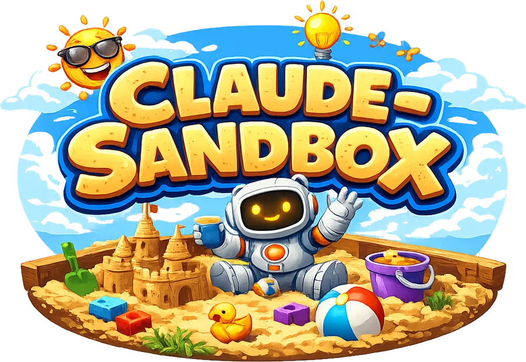

claude-sandbox
Run Claude CLI, Codex, opencode and T3 Code in a Podman container with a full development toolchain.
claude-sandbox wraps Claude CLI, OpenAI Codex CLI, opencode, and t3code in a Podman container with a full development toolchain. It mounts your current directory to /workspace and your ~/.claude, ~/.codex, and ~/.config/opencode configs into the container, keeping your host system clean while giving each agent access to everything it needs.
The binary handles container image pulls, self-updates, and skill updates automatically.
Features
- Sandboxed GitHub CLI — proxied
ghaccess with an audited command allowlist and launch-snapshotted write targets - SSH proxy — filtered SSH access without exposing keys to the container
- Managed fetch approvals — portal-approved, read-only access to exact private SSH repositories
- Git push bridge — opt-in single-repository pushes plus portal-approved repositories for long-running T3 services
- Virtual machine bridge — opt-in creation and control of ephemeral Incus VMs without exposing host credentials or devices
- Clipboard image bridge — paste screenshots from your host into the container via
xclip/wl-paste - Managed configuration — ships default
AGENTS.mdinstructions while preserving your customizations - Per-project memory — auto-memory is isolated per repository, not shared across all containers
- MCP servers — pre-configured Playwright with headless Chromium
- Image builds — build OCI images from a Containerfile or Dockerfile with Buildah, without a daemon or extra privileges
- Agent-controlled GUI — a headless Xvfb virtual display with Openbox, window management, screenshots, input, and accessibility-tree tools for Claude and Codex
- Live display — view and control the sandbox's virtual X display from the T3 admin portal through the existing admin port, no extra ports
- GNOME usage indicator — optional top-bar extension showing plan-limit usage for every provider
- Wrapped sessions — run the command in a tmux session, inject keystrokes and read the screen from outside with
wrap-type/wrap-key/wrap-read - Auto-updates — binary, skills, and container image updates are checked on every launch
- Port exposure — forward ports from the container with
-p
Quick start
Requires Podman.
Download the binary and place it in your PATH:
curl -fsSL https://github.com/nsg/claude-sandbox/releases/latest/download/claude-sandbox -o ~/bin/claude-sandbox
chmod +x ~/bin/claude-sandbox
Run it:
claude-sandbox
Continue with command-line usage, or pick a topic from the menu.
License
MIT — see LICENSE.md for details.